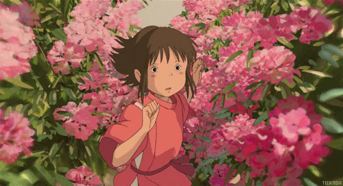
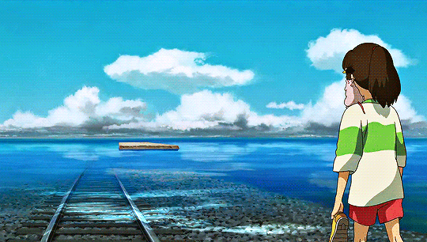

-

Personal
I am Leslie Grace Pelor, a young and ambitious student of Information Technology at Asia Pacific College. As I turn 20 today, I am still exploring my career path and considering my options. However, I am determined to not let any opportunities slip by and to make the most of my education and skills. While my ultimate dream is to become a successful businesswoman, I am also open to the possibilities of utilizing my knowledge and skills as a future ui/ux or web developer. I am ready to embrace the challenges and opportunities that come my way and make a meaningful impact in whatever field I choose.
-

Aspiration in life
My aspiration is to find true inner peace within myself, by learning to accept myself as I am, letting go of self-doubt and negative self-talk, and embracing my own unique journey. I will strive to live in the present moment, cultivate self-compassion, and to find balance and harmony within my mind and body. I will work to find my inner calm, and to be at peace with myself, in order to be able to share that peace with others.
-

Hobbies
My hobbies drastically changed when I faced my worst fear: a torn knee meniscus. As I continue to heal, I had to say goodbye to my beloved physical activities, particularly dancing. Although it was a difficult transition, I was able to discover new hobbies that do not put strain on my knee. These include reading, binge-watching, and engaging in other low-impact activities. One of my favorite books is "A Man Called Ove" by Fredrick Backman, and my favorite movie, other than studio films, is "Love, Rosie." If you're ever in need of book or movie recommendations, I'd be more than happy to provide some suggestions.
-

Favorite quote of Paulo Coelho
People are capable, at any time in their lives, of doing what they dream of. -Paulo Coelho This quote resonates with me because it reminds me that I am capable of achieving my dreams and aspirations, regardless of my current circumstances. It gives me motivation and encouragement to pursue my goals and to believe in myself. It reminds me that if I have the determination and will to make it happen, I can achieve anything I set my mind to.